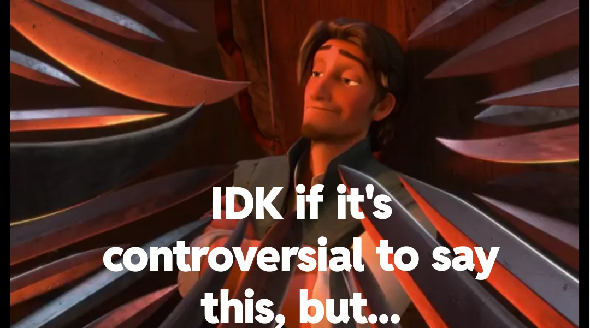

Theorem 1. Pythagorean theorem.
In a right triangle \(\triangle ABC\) with legs \(a\) and \(b\text{,}\) we have
\begin{equation*}
a^2 + b^2 = c^2\text{.}
\end{equation*}
David Austin
Grand Valley State University
Michigan MAA Section Meeting
March 28, 2026
These slides are at gvsu.edu/s/3zr
February 19, 2026
Recent federal mandates require that university faculty provide course materials and other documents only in accessible formats. While we have yet to hear much about this in Michigan, other states are taking this seriously, and it’s probably only a matter of time before it becomes a requirement here.
From GVSU’s Vice President of People, Equity, and Culture
March 6, 2026
Dear faculty and staff,
New regulations under the Americans with Disabilities Act Amendments Act (ADAAA) will require GVSU digital content to comply with Web Content Accessibility Guidelines (WCAG) 2.1 Level AA standards its official technical standard for digital accessibility.… As we work toward the April 24, 2026, compliance milestone ...
From GVSU’s Digital Accessibility Committee:
Your content should be presented in ways [all] people can access. Provide alt text for meaningful images.
Your content should be easy to navigate and use [with the keyboard].
Your content should work well with different devices and assistive technologies.
Attention to accessibility creates a better experience for everyone.
Thinking about a broader audience makes us better communicators.
People have been thinking about this, and math is ahead of most other disciplines.
It’s going to take some work and require some learning.

A modern replacement for LaTeX
Write once, read anywhere: From a single source, a document can be rendered in
HTML, fully accessible with a screenreader,
SCORM, for embedding in an LMS,
PDF for printing,
BRF, braille ready format.
No accessibility expertise is required.
Open source, free to use, and future proof
<theorem xml:id="theorem-pythagoras">
<title>Pythagorean theorem</title>
<statement>
<p>
In a right triangle <m>\triangle ABC</m> with legs <m>a</m> and <m>b</m>, we have
<me>
a^2 + b^2 = c^2
</me>.
</p>
</statement>
<proof>
<p>
See Euclid
</p>
</proof>
</theorem>
In a right triangle \(\triangle ABC\) with legs \(a\) and \(b\text{,}\) we have
See Euclid
PreFigure is to figures what PreTeXt is to text.
Write once, read everywhere. From the same source, PreFigure creates
SVG for HTML, including annotations
PDF for print,
tactile graphics for embossing,
more ….

Freely available and open source
Flexibility to illustrate different mathematical disciplines
Facilitates staying in our "authoring brains" so that we focus on the content we wish to express
A standalone project but also fully integrated into PreTeXt
Vibrant community of users, e.g. mathtech.org
PreTeXt: pretextbook.org
PreFigure: prefigure.org
PreFigure playground: gvsu.edu/s/35f, thanks to Jason Siefken